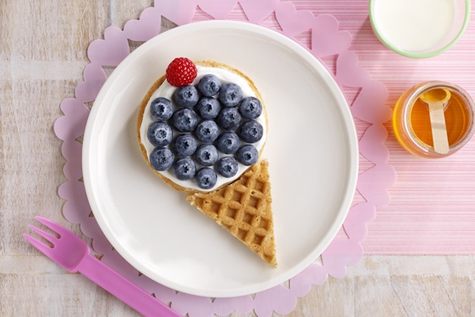
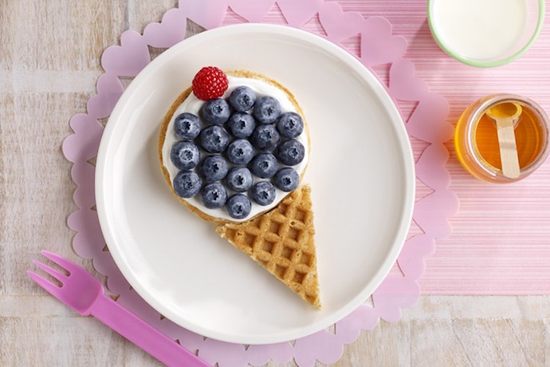

Bienvenue à la Garderie Saint-Bruno
Un environnement sécuritaire, créatif et bienveillant où chaque enfant peut grandir, apprendre et s'épanouir dans un cadre chaleureux et stimulant
.jpg)
Ce qui nous distingue

Bienveillance
Un environnement chaleureux où chaque enfant se sent aimé et respecté

Activités créatives
Programme enrichi avec musique, arts et activités stimulantes

Sécurité
Installations modernes et sécuritaires avec personnel qualifié

Développement
Programme éducatif adapté pour favoriser l'épanouissement de votre enfant
Notre approche nutritionnelle
À la Garderie Saint-Bruno, nous croyons fermement que la nutrition est fondamentale pour le développement et le bien-être de vos enfants. C'est pourquoi nous privilégions des ingrédients locaux et biologiques lorsque c'est possible.
Nos repas sont préparés avec soin en utilisant des produits frais de la région, soutenant ainsi nos producteurs locaux tout en offrant à vos enfants des aliments de la plus haute qualité. Nous préparons des soupes maison, servons des fruits frais et des baies de saison, et offrons des options saines et nutritives à chaque repas.
Notre engagement envers une alimentation saine et responsable fait partie intégrante de notre mission d'offrir le meilleur environnement possible pour vos tout-petits.

 

Notre pouponnière
Notre pouponnière est spécialement conçue pour offrir un environnement sécuritaire, confortable et stimulant pour nos plus petits. Chaque détail a été pensé pour créer un espace où les bébés peuvent grandir en toute sérénité.
Nos installations modernes comprennent des lits adaptés, un mobilier sécuritaire et un décor apaisant qui favorise le repos et l'éveil. L'espace est aménagé pour répondre aux besoins spécifiques des bébés tout en respectant les normes de sécurité les plus strictes.
Notre équipe qualifiée veille avec attention et bienveillance sur chaque enfant, créant un environnement chaleureux où les parents peuvent avoir confiance.
Préparation pour l'école
À la Garderie Saint-Bruno, nous intégrons la culture de micro-pousses dans notre programme éducatif comme moyen unique de préparer vos enfants pour l'école et la vie.
Cette activité pratique permet aux enfants de découvrir le cycle de vie des plantes, d'apprendre la patience et la responsabilité, tout en développant leur compréhension de la nature et de l'environnement. Les enfants participent activement à la plantation, à l'entretien et à la récolte de ces jeunes pousses nutritives.
Cette expérience enrichissante favorise le développement de compétences essentielles telles que l'observation, la planification et le suivi, tout en renforçant leur connexion avec la nature et les aliments qu'ils consomment. C'est une façon concrète et engageante de les préparer aux apprentissages scolaires tout en cultivant leur curiosité et leur autonomie.
Programme Éducatif
À la Garderie Saint-Bruno, nous croyons fermement que les enfants sont les agents de leur propre développement. Notre approche éducative est centrée sur l'enfant et reconnaît que chaque petit être est unique, avec ses propres intérêts, rythmes et façons d'apprendre.
Notre rôle est d'accompagner, de guider et de soutenir chaque enfant dans son parcours d'apprentissage. Nous créons un environnement riche et stimulant où les enfants peuvent explorer, expérimenter et découvrir à leur propre rythme. Nous observons attentivement leurs intérêts et leurs besoins pour adapter nos interventions et offrir des expériences significatives qui favorisent leur développement global.
Nous aidons les enfants à développer leur autonomie, leur confiance en soi et leur capacité à résoudre des problèmes. En leur donnant des choix, en les encourageant à prendre des initiatives et en valorisant leurs efforts, nous les aidons à devenir des apprenants actifs et engagés. Notre équipe éducative qualifiée est là pour les soutenir, les encourager et célébrer leurs réussites, grandes et petites.
Ensemble, nous créons un environnement où chaque enfant peut s'épanouir, développer son plein potentiel et acquérir les compétences nécessaires pour réussir, tant à l'école que dans la vie.
Prêt à nous rencontrer?
Contactez-nous pour planifier une visite ou pour obtenir plus d'informations
Nous contacter